1020D11 Crankshaft oil seal FRONT COVER - R.R. Replace gasket with timing belt removed - Includes cleaning matching surfaces and applying sealant
- Path
- Procedures > 10 ENGINE > 1020 CRANKCASE SUMP AND COVERS > 1020D OIL SEALS ON CRANKSHAFT > 1020D11 Crankshaft oil seal FRONT COVER - R.R. Replace gasket with timing belt removed - Includes cleaning matching surfaces and applying sealant
- Kind
- repair procedure (removal / refitting; the operation number is the code)
- Applies to
- engines: 2.4 JTD 20V; all production periods
- Interactive page
- https://sloeber94.github.io/elrnDB-lThss/en/#/851173
Applies to: engines: 2.4 JTD 20V; all production periods
 Removing
Removing
 Refitting
RefittingSee in Op. 0010T84 AIR CONDITIONING system COOLANT - Dry and repressurize
See in Op. 1084B30 CARTRIDGE ENGINE OIL FILTER -R.R.
1. Unscrew bolt (1a), open band (1b) and remove the rigid air pipe to the heat exchanger (1c).
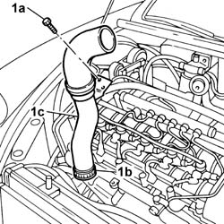
Applies to: engines: 2.4 JTD 20V; all production periods
1. Unscrew bolts (1a) and disconnect high and low pressure pipes (1b) from the air conditioner compressor.
2. Disconnect the electrical connection of the air conditioner comressor activation electromagnet.
 | Description | Connector |
|---|---|---|
2 | Air conditioning compressor engagement electro-magnet | L020 |
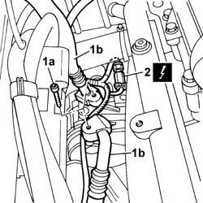
Applies to: engines: 2.4 JTD 20V; all production periods
1. Remove the multifunction control unit guard.
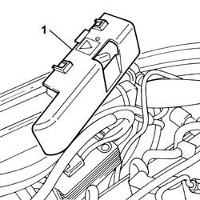
Applies to: engines: 2.4 JTD 20V; all production periods
1. Unscrew multifunction ECU bolt (1a), disconnect the electrical connection of fan (1b) and move the multifunction ECU with wiring (1c) outside the working area.
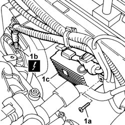
Applies to: engines: 2.4 JTD 20V; all production periods
1. Unscrew bolts (1a) and nut (1b) securing air conditioner compressor (1c) to the mount and remove.
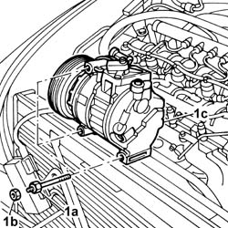
Applies to: engines: 2.4 JTD 20V; all production periods
See in Op. 1048B44 RIGID air supply PIPE from heat exchanger to intake manifold - R.R.
See in Op. 1048A56 UPPER RESONATOR - R.R.
See in Op. 1048A50 air inlet pipe to turbocharger - r + r
See in Op. 1084C38 Engine oil supply and return pipes to cooling radiator - R.R.
See in Op. 1084C10 Engine oil heat exchanger - R.R.
- Position a special hydraulic lift and refit the gearbox side engine support.
1. Position the engine supporting crossmember and secure it using an eyelet fastened to the timing side.
 | Description | Code | Function |
|---|---|---|---|
1 | Crossmember | 1.870.595.000 | Power unit support |
2. Undo the upper bolts securing the rigid power unit/compressor support.
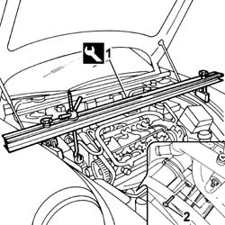
Applies to: engines: 2.4 JTD 20V; all production periods
- Lift.
1. Undo the nut securing the flexible mounting to the rigid power unit mounting.
2. Undo the bolts fixing the timing side engine support flexible mounting to the chassis.
3. Undo the lower bolts fixing the rigid power unit mounting support to the cylinder block/crankcase.
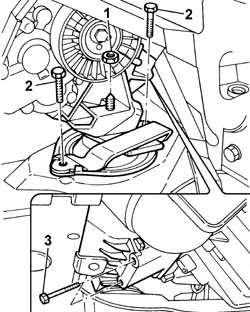
Applies to: engines: 2.4 JTD 20V; all production periods
- Lower the lift.
- Position a suitable hydraulic lift.
1. Undo the nut (1a) fixing the rigid rear power unit support (1b).
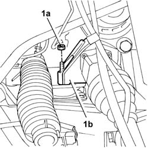
Applies to: engines: 2.4 JTD 20V; all production periods
1. Raise the timing side power unit and remove the rigid power unit support (1a) and also remove the flexible mounting (1b).
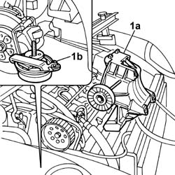
Applies to: engines: 2.4 JTD 20V; all production periods
1. Undo the fixing bolts (1a) and remove the auxiliary belt moving tensioner mounting bracket (1b).
- Fit the flywheel lock.
| Description | Code | Function |
|---|---|---|---|
. | Flywheel lock | 1.860.898.000 | Engine flywheel lock |
2. Undo the (LEFT) fixing bolt (2a) and remove the drive pulley (2b).
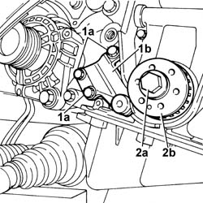
Applies to: engines: 2.4 JTD 20V; all production periods
See in Op. 1020A20 CRANKCASE SUMP - R.R. clean contact surfaces and apply sealant
1. Undo the fixing bolts (1a) and remove the front oil cover (1b).
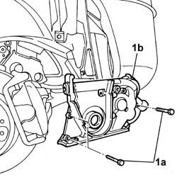
Applies to: engines: 2.4 JTD 20V; all production periods
Refitting
Removing- Remove the oil seal from the housing in the crankshaft front oil seal cover.
- Fit the oil seal front cover and tighten the fixing bolts.
1. Fit a new oil seal using the special fitting tool.
| Description | Code | Function |
|---|---|---|---|
1 | Fitting tool | 1.871.000.500 | Tool for fitting crankshaft front oil seal |
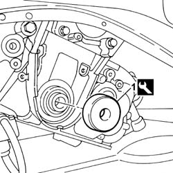
Applies to: engines: 2.4 JTD 20V; all production periods
See in Op. 1020A20 CRANKCASE SUMP - R.R. clean contact surfaces and apply sealant
- Fit the drive pulley and tighten the (LEFT) fixing bolt.
 | Value - daNm | Fastening | Component | Ø |
|---|---|---|---|---|
2 | 34 | Anticlockwise bolt | DRIVE PULLEY(PULLIES) TIMING | M16 |
- Remove the flywheel lock fitted previously.
| Description | Code | Function |
|---|---|---|---|
. | Flywheel lock | 1.860.898.000 | Engine flywheel lock |
- Fit the auxiliary drive belt automatic tensioner mounting bracket and tighten the fixing bolts.
- Position a special hydraulic lift and raise the power unit, timing side.
- Fit the flexible mounting and tighten the fixing bolts.
- Tighten the lower bolts fixing the engine/compressor support to the cylinder block/crankcase to torque.
| Value - daNm | Fastening | Component | Ø |
|---|---|---|---|---|
. | (cylinder block/crankcase side) 7 | Nuts | RIGID ENGINE MOUNT, TIMING SIDE | M10X1.25 |
- Tighten the bolts fixing the flexible mounting to the chassis to torque.
| Value - daNm | Fastening | Component | Ø |
|---|---|---|---|---|
. | 5.8 | Bolt | FRONT FLEXIBLE MOUNTING BLOCKS, POWER UNIT | M10 X 1.25 |
- Tighten the nut fixing the support to the flexible mounting to the engine support to torque.
| Value - daNm | Fastening | Component | Ø |
|---|---|---|---|---|
. | 4,5 | Nut | POWER UNIT RIGID TIMING MOUNT | M10 X 1.25 |
- Tighten the nut fixing the engine support/intermediate shaft to the flexible mounting to torque.
| Value - daNm | Fastening | Component | Ø |
|---|---|---|---|---|
. | 4,5 | Nut | POWER UNIT REAR RIGID MOUNT | M10 X 1.25 |
- Lower the lift.
- Tighten the upper bolts fixing the engine/compressor support to the cylinder block/crankcase to torque.
| Value - daNm | Fastening | Component | Ø |
|---|---|---|---|---|
. | (cylinder block/crankcase side) 7 | Nuts | RIGID ENGINE MOUNT, TIMING SIDE | M10X1.25 |
- Remove the engine supporting crossmember.
| Description | Code | Function |
|---|---|---|---|
. | Crossmember | 1.870.595.000 | Power unit support |
See in Op. 1084C10 Engine oil heat exchanger - R.R.
See in Op. 1084C38 Engine oil supply and return pipes to cooling radiator - R.R.
See in Op. 1048A50 air inlet pipe to turbocharger - r + r
See in Op. 1048A56 UPPER RESONATOR - R.R.
See in Op. 1048B44 RIGID air supply PIPE from heat exchanger to intake manifold - R.R.
- Place the air conditioner compressor in position and tighten the fixing bolts.
| Value - daNm | Fastening | Component | Ø |
|---|---|---|---|---|
. | (Compressor support) 3.5 | Bolt | AIR CONDITIONER ASSEMBLY COMPRESSOR | M10 x1,25 |
- Fit the multifunction ECU, tighten the bolts and connect the electrical connection.
- Fit the multi-function control unit cover.
- Connect the electrical connection of the air conditioner compressor activation electromagnet.
| Description | Connector |
|---|---|---|
. | Air conditioning compressor engagement electro-magnet | L020 |
- Fit the high and low pressure pipes to the air conditioner compressor and tighten the bolts.
- Position the air pipe to the heat exchanger, tighten the bolt and and connect to the hose using a retaining band.
See in Op. 1084B30 CARTRIDGE ENGINE OIL FILTER -R.R.
See in Op. 0010T84 AIR CONDITIONING system COOLANT - Dry and repressurize
- Top up the engine coolant following the instructions:
See in Op. 0010T21 ENGINE COOLANT - Check density and top up if necessary
- Top up the engine coolant following the instructions:
See in Op. 0010T11 ENGINE OIL - Check level and top up if necessary
Topics linked from this page (10)
- 0010T11 ENGINE OIL - Check level and top up if necessary
- 0010T21 ENGINE COOLANT - Check density and top up if necessary
- 0010T84 AIR CONDITIONING system COOLANT - Dry and repressurize
- 1020A20 CRANKCASE SUMP - R.R. clean contact surfaces and apply sealant
- 1048A50 air inlet pipe to turbocharger - r + r
- 1048A56 UPPER RESONATOR - R.R.
- 1048B44 RIGID air supply PIPE from heat exchanger to intake manifold - R.R.
- 1084B30 CARTRIDGE ENGINE OIL FILTER -R.R.
- 1084C10 Engine oil heat exchanger - R.R.
- 1084C38 Engine oil supply and return pipes to cooling radiator - R.R.